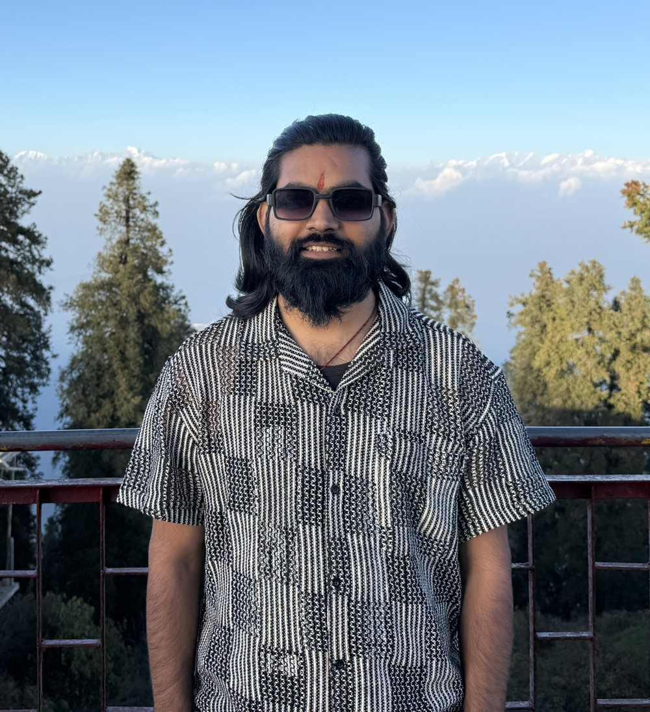

About
I am a PhD researcher at the Centre of Excellence in Disaster Mitigation and Management, IIT Roorkee, in the Weather and Climate Research Group led by Dr. Piyush Srivastava. My thesis is on how numerical weather prediction models represent the surface and boundary layer over mountains.
Most of my days go between two kinds of data. One is high-frequency turbulence measurements from a flux tower in the Central Himalaya. The other is output from the WRF model, which I run at kilometre resolution over Uttarakhand and the wider Northwest Himalaya. The question that ties them together is simple to state: when the model computes the exchange of heat and momentum at the ground, how wrong is it over steep terrain, and why?
I came to atmospheric science from pure mathematics. My master's projects at IIT Hyderabad were on the Riemann-Roch theorem for function fields and on arcs in finite projective spaces. That background is useful in modelling work, because parameterization schemes are differential equations with closure assumptions, and both can be checked directly instead of being treated as a black box.
Alongside the thesis I contribute the atmospheric modelling to group studies of extreme rainfall, landslides and urban heat stress, including the July 2024 Wayanad landslide.
- Position
- PhD researcher, since July 2023
- Group
- Weather and Climate Research Group, CoEDMM
- Supervisor
- Dr. Piyush Srivastava
- Based in
- Roorkee, Uttarakhand, India

Education
Ph.D., Disaster Mitigation and Management
Indian Institute of Technology Roorkee. Thesis: On improved representation of mountain boundary and surface layer processes in the numerical weather prediction model.
M.Sc., Mathematics
Indian Institute of Technology Hyderabad. Projects on the Riemann-Roch theorem for function fields (July to December 2021) and on arcs in finite projective spaces, with links to maximum distance separable codes (January to June 2022).
B.Sc., Mathematics
Kisan P.G. College, Dr. Ram Manohar Lohia Avadh University, Ayodhya.
Experience
Doctoral researcher, CoEDMM, IIT Roorkee
Surface layer parameterization and boundary layer modelling over complex terrain. Source-level changes to WRF surface layer routines in Fortran, eddy covariance processing, and model evaluation with correlation, mean bias, MAE, RMSE and index of agreement.
Junior Research Fellow, CoEDMM, IIT Roorkee
Project on improved representation of surface layer parameterizations in the Weather Research and Forecasting model. This work led directly into the doctoral research.
Skills
Models
Programming
Methods
Graphics and GIS
Mathematics coursework
Real, complex, functional and numerical analysis. Ordinary and partial differential equations. Probability. Linear algebra, groups, rings, fields and modules, algebraic geometry, number theory and algebraic coding theory.
Disaster management coursework
Vulnerability and risk analysis, landslide hazard assessment and mitigation, remote sensing and GIS, geospatial data for disaster mitigation.
Qualified GATE in 2022 and 2023, and JAM in 2019 and 2020.